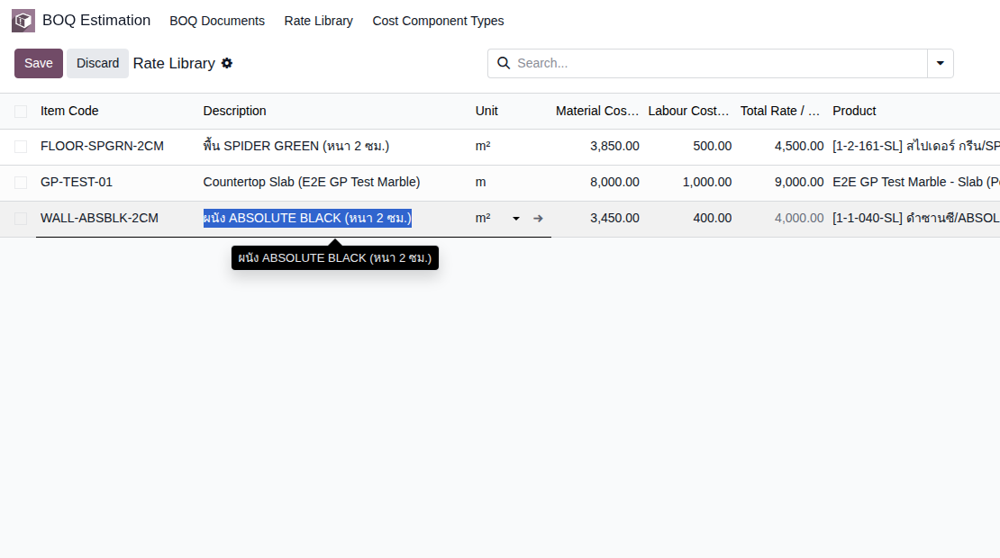
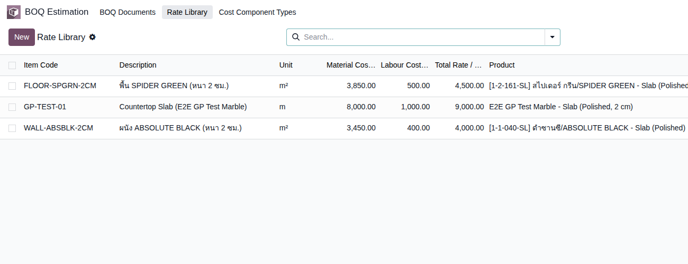
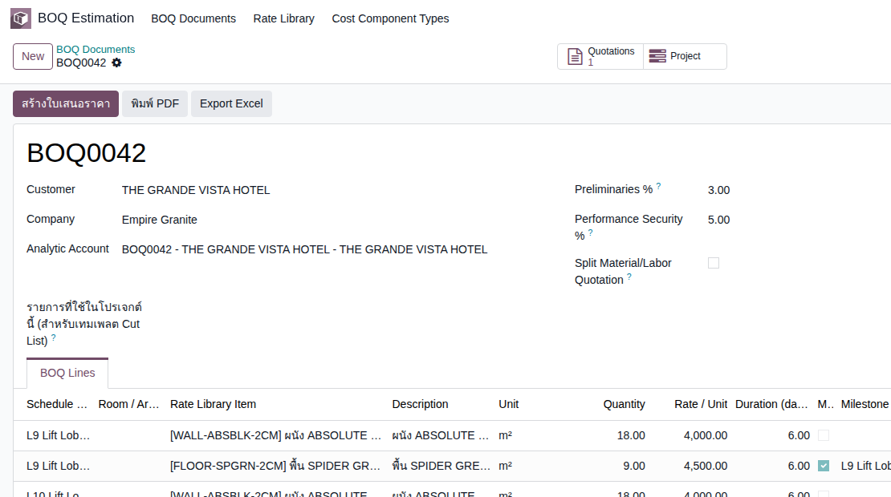
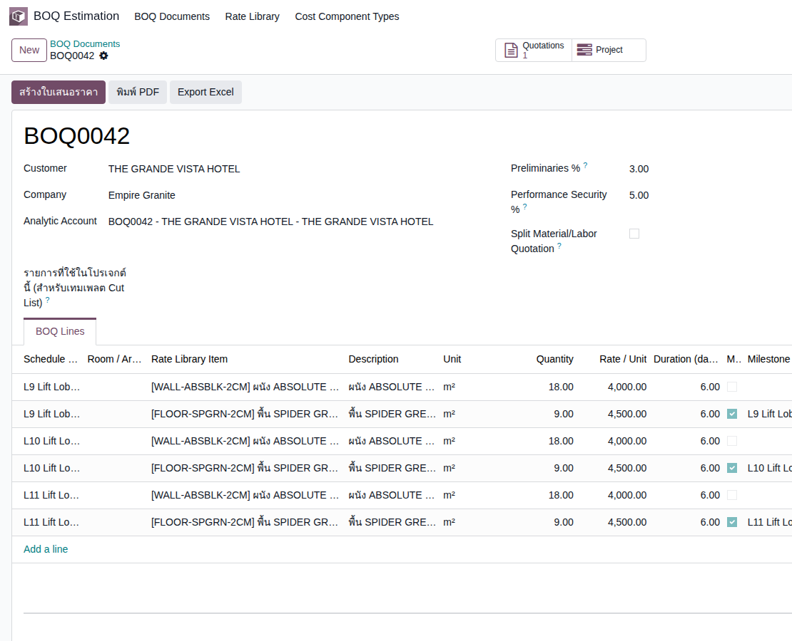
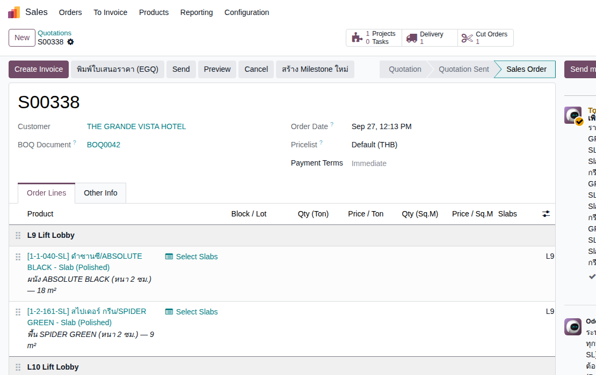
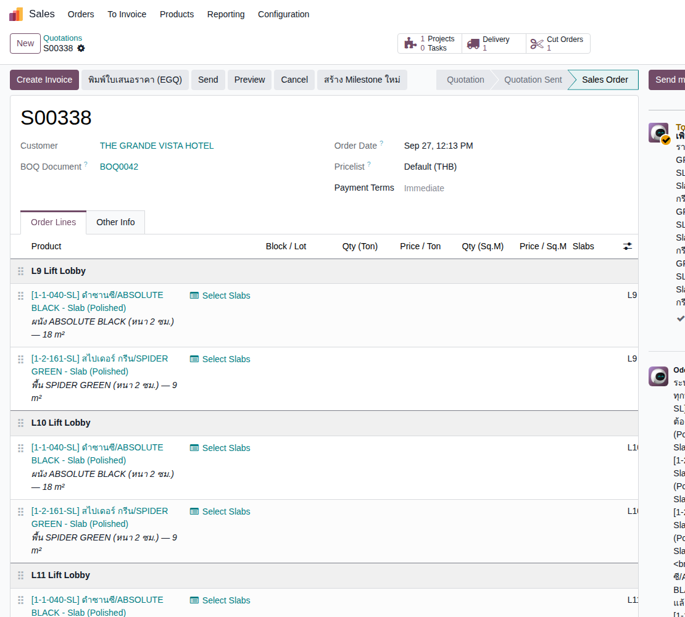
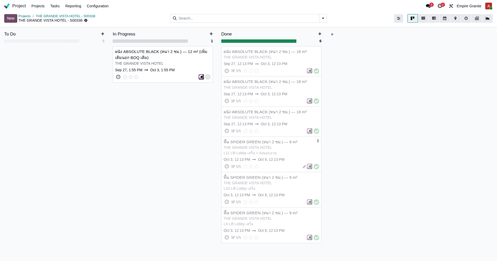
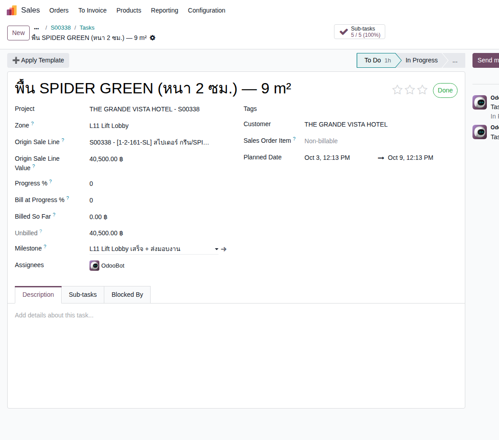
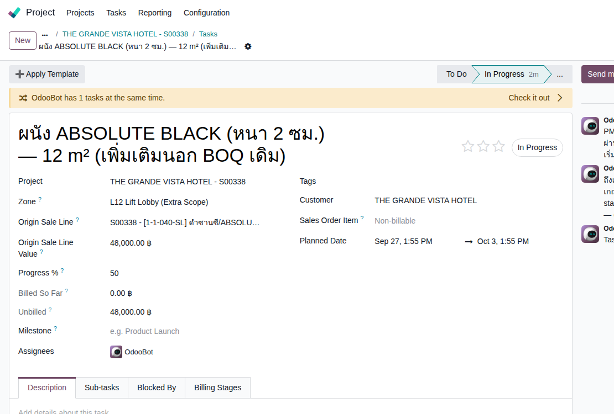
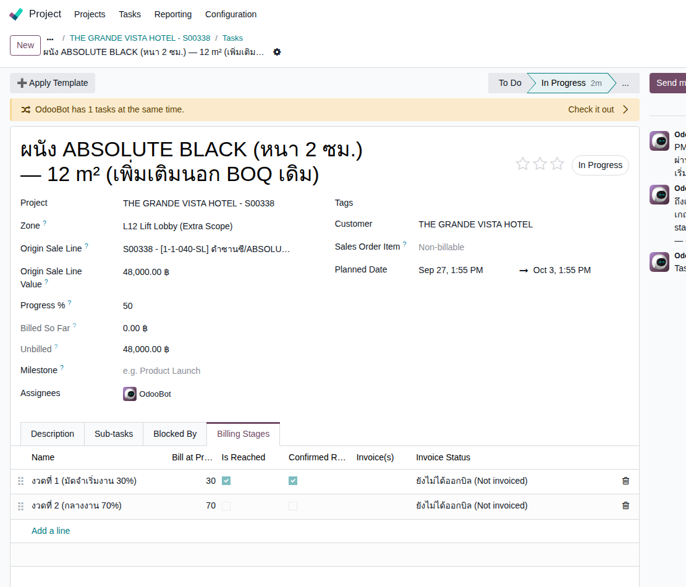

Empire Stone × Empire Granite — QA · แนวคิด EG-321
Golden Path — BOQ + Project ทำงานร่วมกัน (Hotel Lift Lobby)
อัปเดตล่าสุด: 27 ก.ย. 2026 — รันสดผ่านหน้าจอจริง (Playwright, eg-tst) แทนที่เอกสาร self-test เดิม
อัปเกรดจากเอกสาร "BOQ + Project ทำงานร่วมกัน" เดิม (1 วัสดุ, 2 Elevation, ยังไม่รันจริง) ให้สมจริงและครบสายกว่าเดิม: 3 วัสดุ+โครงสร้างต้นทุนละเอียด (Material/Labour/วัสดุสิ้นเปลือง), 3 Zone จริง (ไม่ใช่ 2 Elevation เท่ากันหมด), Preliminaries + Performance Security % ที่ไม่เคยมีเคสทดสอบมาก่อน, ปิดงานจริงจน Milestone ขึ้น Reached ครบทั้ง 3 Zone, และเพิ่มสถานการณ์งานเพิ่มนอก BOQ ระหว่างทางเพื่อโชว์ฟีเจอร์ใหม่ Task Billing Stage (แจ้งเตือนเก็บเงินตาม % ความคืบหน้า)
15Test Case ทั้งหมด
9High Priority
6Medium Priority
2บั๊กจริงที่พบ+แก้ระหว่างทำเอกสารนี้
เอกสารนี้รันสดจริงผ่านหน้าจอ (Playwright, eg-tst) ไม่ใช่ self-test แล้ว: ทุกภาพหน้าจอในตารางด้านล่างคือภาพจริงจากการรัน ไม่ใช่ mockup — Fixture จริง: BOQ
BOQ0042 → SO S00338 (ยอดรวม ฿424,827.45 รวม VAT) → Project id 35 "THE GRANDE VISTA HOTEL - S00338" → 6 Task จริง + 30 Sub-task + Task เพิ่มเติม 1 ใบ (id 251, Zone L12)
🐛 บั๊กจริง 2 ตัวที่พบและแก้ระหว่างสร้างเอกสารนี้ (deploy แล้วทั้ง eg-tst/mbx-ee-dev, push แล้ว):
- BOQ Summary Line กลายเป็น Task ปลอมบน Project — ครั้งแรกที่มีคนติ๊ก Preliminaries % และ Performance Security % พร้อมกับ Sold as Project บรรทัดสรุปยอด ("Preliminaries (3%)", "Overhead & Profit", "Performance Security") ถูกสร้างเป็น Task จริงบน Project ไปด้วย (ไม่มี Zone/ไม่มี Milestone) ทั้งที่ไม่ใช่งานจริง แก้โดยกรองบรรทัด BOQ Summary Line ออกก่อนจัดกลุ่ม Zone ใน
_stone_project_zones()(sale_order.py) — commita2a12ee - Milestone ไม่ยอมขึ้น Reached หลัง Apply Task Template Set — พอใส่ Template 5 ขั้นตอนย่อยลงใน Task ที่ถือ Milestone อยู่ Sub-task ทั้ง 5 ใบได้ Milestone เดียวกับ Task แม่ไปโดยอัตโนมัติ (พฤติกรรมปกติของ Odoo core) ทำให้เงื่อนไขเดิมที่เช็คว่า "Milestone ต้องมี Task เดียว" ไม่ผ่านอีกต่อไป แม้ Task แม่จะ Done จริงแล้วก็ตาม แก้โดยเช็คจาก field ที่ระบุว่าเป็น Task ต้นตัวจริงจาก SO แทนการนับจำนวน Task — commit
ecd5671
1. เตรียม Rate ใหม่
ตั้ง Rate สำหรับผนัง+พื้น จากวัสดุที่มีต้นทุนจริงในระบบอยู่แล้ว — แยก Material/Labour/วัสดุสิ้นเปลืองเป็นคนละก้อนตั้งแต่ต้น
| TC ID | Scenario | Precondition | Steps | ข้อมูลตัวอย่าง | Expected Result | ภาพหน้าจอ | Priority |
|---|---|---|---|---|---|---|---|
| TC-BPH-01 | สร้าง Rate ผนัง ABSOLUTE BLACK (3 Cost Component) | - |
|
[WALL-ABSBLK-2CM] ผนัง ABSOLUTE BLACK (หนา 2 ซม.) Material 3,450 + Labour 400 + Other (วัสดุสิ้นเปลือง) 150 = 4,000 บาท/ตร.ม. |
Rate บันทึกสำเร็จ Total Rate/Unit คำนวณอัตโนมัติ = 4,000 บาท ตรงกับผลรวม 3 Component |  ดูภาพ |
High |
| TC-BPH-02 | สร้าง Rate พื้น SPIDER GREEN (3 Cost Component) | - |
|
[FLOOR-SPGRN-2CM] พื้น SPIDER GREEN (หนา 2 ซม.) Material 3,850 + Labour 500 + Other 150 = 4,500 บาท/ตร.ม. |
Rate Library มี 2 รายการใหม่ พร้อมใช้ในเอกสาร BOQ |  ดูภาพ |
Medium |
2. สร้าง BOQ หลายวัสดุ หลาย Zone
6 บรรทัด (ผนัง+พื้น × 3 ชั้น) + เปิดใช้ Preliminaries/Performance Security ที่ไม่เคยมีเคสทดสอบมาก่อน
| TC ID | Scenario | Precondition | Steps | ข้อมูลตัวอย่าง | Expected Result | ภาพหน้าจอ | Priority |
|---|---|---|---|---|---|---|---|
| TC-BPH-03 | สร้างลูกค้าใหม่ + เปิดเอกสาร BOQ | ทำหมวด 1 เสร็จแล้ว |
|
ลูกค้า = "THE GRANDE VISTA HOTEL" | เปิดฟอร์ม BOQ Document ใหม่ สถานะ Draft พร้อม Analytic Account ผูกอัตโนมัติ |  ดูภาพ |
High |
| TC-BPH-04 | เพิ่ม 6 บรรทัด BOQ (ผนัง+พื้น × 3 ชั้น) พร้อม Duration/Milestone Milestone ติ๊กเฉพาะบรรทัด "พื้น" ของแต่ละ Zone เพราะเป็นบรรทัดสุดท้ายที่ทำเสร็จในชั้นนั้น (ผนังทำก่อนพื้นเสมอ) |
ทำ TC-BPH-03 เสร็จแล้ว |
|
L9/L10/L11: ผนัง 18 ตร.ม. + พื้น 9 ตร.ม. ต่อชั้น, Duration 6 วันทุกบรรทัด Milestone: "L9 Lift Lobby เสร็จ" / "L10...เสร็จ" / "L11...เสร็จ + ส่งมอบงาน" |
6 BOQ Lines ราคา/หน่วยเติมอัตโนมัติจาก Rate — Direct Cost รวม = 337,500 บาท |  ดูภาพ |
High |
| TC-BPH-05 | ตั้ง Preliminaries 3% + Performance Security 5% ตรวจยอดรวม ครั้งแรกที่มีเคสทดสอบ 2 ค่านี้ — ก่อนหน้านี้เป็น 0 มาตลอด |
ทำ TC-BPH-04 เสร็จแล้ว |
|
Preliminaries 3%, Performance Security 5% | Direct Cost 337,500 + Preliminaries 10,125 + Overhead&Profit 32,535 (9.64% ผสม เพราะ Other bucket ไม่มี Adder) + Performance Security 16,875 = Total 397,035 บาท | ดูภาพ | High |
3. ออกใบเสนอราคา + เปิดสวิตช์ Project
2 สวิตช์มาบรรจบกันตรงนี้ — BOQ ส่งราคา+กำหนดงานให้ใบเสนอราคาอัตโนมัติ แล้วค่อยเปิดสวิตช์ Project เพิ่ม
| TC ID | Scenario | Precondition | Steps | ข้อมูลตัวอย่าง | Expected Result | ภาพหน้าจอ | Priority |
|---|---|---|---|---|---|---|---|
| TC-BPH-06 | กด "สร้างใบเสนอราคา" (Generate Quotation) | ทำ TC-BPH-05 เสร็จแล้ว |
|
- | ได้ใบเสนอราคาใหม่ S00338 มี Section คั่นทั้ง 3 ชั้น field "BOQ Document" ชี้กลับไป BOQ0042 |  ดูภาพ |
High |
| TC-BPH-07 | ตรวจ Zone/ราคาต่อบรรทัดตรงกับ BOQ สินค้าหินขายเป็น "Units" (จำนวนแผ่น) ไม่ใช่ตร.ม. — ราคาต่อบรรทัดยังคงถูกต้องเพราะระบบเก็บยอดเต็มไว้ที่ Price/Unit ไม่ใช่คูณจาก Qty |
ทำ TC-BPH-06 เสร็จแล้ว |
|
- | 6 บรรทัดจริง แต่ละบรรทัดมีปุ่ม "Select Slabs" (ยังไม่มีสต๊อกจริง) คอลัมน์ Zone = L9/L10/L11 ตรงกับ BOQ Line เดิม |  ดูภาพ |
Medium |
| TC-BPH-08 | ติ๊ก "Sold as Project" + Confirm ระบบยังไม่มีสต๊อกหินจริงในฐานทดสอบ — จะมี popup เตือน "ยืนยันทั้งที่ยังไม่มีของ" ขึ้นมาก่อน กด "Confirm ต่อ" เพื่อไปต่อ (กลไกเตือนปกติ ไม่ใช่บั๊ก) |
ทำ TC-BPH-07 เสร็จแล้ว |
|
- | SO ยืนยันสำเร็จ (state = Sales Order) ยอดรวม 424,827.45 บาท (รวม VAT 7%) ระบบสร้าง Project ให้อัตโนมัติเบื้องหลัง | ดูภาพ | High |
4. ตรวจ Project ที่สร้างขึ้น + ใส่ Template งานมาตรฐาน
6 Task หลัก (ผูกกลับ BOQ ผ่าน SO Line ตรงๆ) แตกเป็น 5 ขั้นตอนย่อยจริงต่อ Task
| TC ID | Scenario | Precondition | Steps | ข้อมูลตัวอย่าง | Expected Result | ภาพหน้าจอ | Priority |
|---|---|---|---|---|---|---|---|
| TC-BPH-09 | เปิด Project ตรวจ 6 Task (2 ต่อ Zone) | ทำ TC-BPH-08 เสร็จแล้ว |
|
- | Project "THE GRANDE VISTA HOTEL - S00338" มี 6 Task: ผนัง+พื้น × 3 Zone แต่ละ Task ผูก Zone ถูกต้อง |  ดูภาพ |
High |
| TC-BPH-10 | Apply Task Template Set "งานติดตั้งหน้างานมาตรฐาน (5 ขั้นตอน)" ให้ทุก Task Template นี้มีอยู่แล้วในระบบ ไม่ต้องสร้างใหม่ — รื้อถอน/เตรียมพื้นที่ → เตรียมพื้นผิว → ติดตั้งหิน → QC/ขัดผิว → ส่งมอบ/ทำความสะอาด รวม 6 วัน ตรงกับ Duration ที่ตั้งไว้ |
ทำ TC-BPH-09 เสร็จแล้ว |
|
- | แต่ละ Task มี 5 Sub-task ย่อยจริง ("Sub-tasks 5/5" แสดงบนหัว Task) ผูกกลับ Task แม่เดิม |  ดูภาพ |
Medium |
5. ปิดงานจริงครบ 3 Zone
ทำ Sub-task + Task ให้ Done จริง ตรวจว่า Milestone ขึ้น Reached ถูกต้อง (จุดที่เจอบั๊กที่ 2)
| TC ID | Scenario | Precondition | Steps | ข้อมูลตัวอย่าง | Expected Result | ภาพหน้าจอ | Priority |
|---|---|---|---|---|---|---|---|
| TC-BPH-11 | ทำ Sub-task ทุกใบ + Task หลักให้ Done ครบทั้ง 3 Zone | ทำ TC-BPH-10 เสร็จแล้ว |
|
- | ทุก Task ขึ้น "Done" พร้อมเครื่องหมายถูกสีเขียว การ์ดย้ายไปคอลัมน์ "Done" บน Kanban | ดูภาพ | High |
| TC-BPH-12 | ตรวจ Milestone ขึ้น "Reached" ครบทั้ง 3 Zone 🐛 จุดที่เจอบั๊กที่ 2 — ก่อนแก้ Milestone ไม่ยอมขึ้น Reached เลยแม้ Task แม่จะ Done แล้ว เพราะ Sub-task ที่มาจาก Template ได้ Milestone เดียวกันไปด้วยอัตโนมัติ (พฤติกรรม Odoo core) แก้แล้วตาม fixed-note ด้านบน |
ทำ TC-BPH-11 เสร็จแล้ว |
|
- | Milestone ทั้ง 3 ("L9 Lift Lobby เสร็จ" / "L10...เสร็จ" / "L11...เสร็จ + ส่งมอบงาน") ขึ้นสถานะ Reached ถูกต้องทุกตัว | ดูภาพ | High |
6. งานเพิ่มนอก BOQ เดิม + แจ้งเตือนเก็บเงินตาม Progress
สถานการณ์จริงที่พบบ่อย: ลูกค้าขอเพิ่มพื้นที่กลางโปรเจกต์ ก่อนออก Change Order เป็นทางการ — ทดสอบฟีเจอร์ใหม่ Task Billing Stage ที่ยังไม่มีเคสทดสอบมาก่อนเลย
| TC ID | Scenario | Precondition | Steps | ข้อมูลตัวอย่าง | Expected Result | ภาพหน้าจอ | Priority |
|---|---|---|---|---|---|---|---|
| TC-BPH-13 | PM เพิ่ม Task ใหม่ตรงบน Project สำหรับ Zone L12 (นอก BOQ เดิม) ต้องผูก "Sales Order Item" ให้ Task นี้ด้วย (ไม่ใช่แค่สร้าง Task เปล่า) ไม่งั้นแท็บ Billing Stages จะไม่ขึ้นให้เห็น — เป็นเงื่อนไขตั้งใจของฟีเจอร์นี้ (ต้องมีมูลค่าติดกับ Task ก่อนถึงจะตั้งเกณฑ์เก็บเงินได้) |
ทำ TC-BPH-12 เสร็จแล้ว |
|
Zone = "L12 Lift Lobby (Extra Scope)" มูลค่า = 48,000 บาท (12 ตร.ม. × 4,000 Rate เดิม) |
Task ใหม่ขึ้นในคอลัมน์ "In Progress" field "Origin Sale Line Value" = 48,000 บาท |  ดูภาพ |
High |
| TC-BPH-14 | กรอก Progress 50% + ตั้งเกณฑ์เก็บเงิน 2 งวด เห็นงวดแรกแจ้งเตือนอัตโนมัติ | ทำ TC-BPH-13 เสร็จแล้ว |
|
งวดที่ 1 (มัดจำเริ่มงาน 30%) / งวดที่ 2 (กลางงาน 70%) | งวดที่ 1: "Is Reached" ✅ (เพราะ 50 ≥ 30) / งวดที่ 2: ยังไม่ขึ้น (50 < 70) — ระบบโพสต์ chatter แจ้งเตือนงวดที่ 1 อัตโนมัติ + สร้าง Activity ให้ PM |  ดูภาพ |
High |
| TC-BPH-15 | PM กดยืนยันพร้อมเก็บเงินงวดที่ 1 | ทำ TC-BPH-14 เสร็จแล้ว |
|
- | งวดที่ 1: "Confirmed" ✅ พร้อมวันที่ยืนยัน — แจ้งเตือน/Activity ของงวดนี้เคลียร์ (ยังต้องไปออก Invoice จริงผ่าน Down Payment wizard เองแยกต่างหาก ระบบไม่ออกบิลให้อัตโนมัติ) | ดูภาพ | Medium |